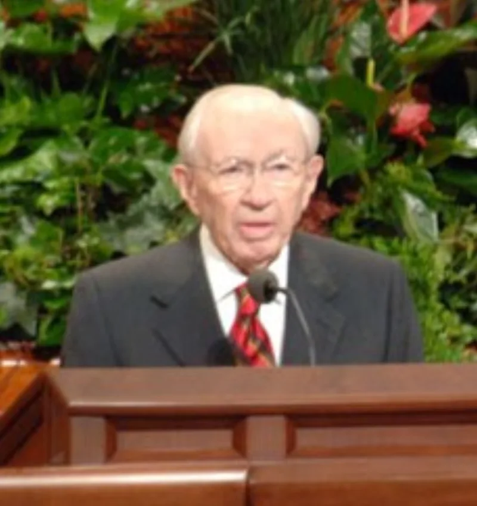
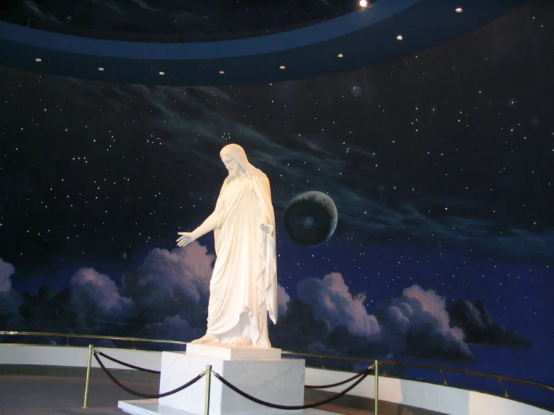

LDS scholars have a real answer here. Say so before your friend does.
He was asked in 1998 whether Latter-day Saints believe in "the traditional Christ." The church president answered: "No, I don't. The traditional Christ of whom they speak is not the Christ of whom I speak.
For the Christ of whom I speak has been revealed in this the Dispensation of the Fulness of Times." It is in the Church News of 20 June 1998.
Because it is the sitting prophet naming the difference himself. Paul warns about "another Jesus, whom we have not preached" in 2 Corinthians 11:4, and another gospel in Galatians 1:8.
FAIR says the quote is real but misused. In context Hinckley was contrasting their Christ with the creedal Christ.
That is the Christ of Nicaea and Chalcedon, the being with no body. He was not contrasting him with the Jesus of the New Testament.
Latter-day Saints insist they worship that Jesus as divine Son, Saviour and Redeemer. The Living Christ, from 2000, says so.
The essay Are Mormons Christian? adds that early Christian views of God shifted a great deal under Greek thought.
And on 2 Corinthians 11:4, Paul was after a different message, not a test in metaphysics.
Genuinely arguable, and do not rest your case on this quote. The quotation is real, and the difference is real.
But "traditional Christ" most naturally means the creeds. FAIR's point has force there.
Whether the same man with a different metaphysics counts as another Jesus is a question for the doctrinal cases. One sentence will not settle it.
"When Hinckley said 'not the traditional Christ,' what did you understand him to mean?"


He meant the Christ of the creeds, not the Jesus of the New Testament.
FAIR argues the quote is real but misused. In context Hinckley was marking off the Latter-day Saint Christ from the creedal Christ. That is the being of Nicaea and Chalcedon, without body and beyond grasp.
He was not marking him off from the Jesus of the New Testament. Latter-day Saints insist they worship that Jesus as divine Son of God, Saviour and Redeemer. The Living Christ of 2000 says exactly that.
The essay Are Mormons Christian? adds that the earliest Christian view of God 'changed dramatically over the course of centuries' under Greek thought. So holding to fourth-century creeds cannot be the test of who follows Jesus. They claim restored Christianity, not reformed Christianity.
And on 2 Corinthians 11:4 they note that Paul's target was a different gospel message, not an exam on metaphysics.
Arguable: the quote is real, but do not rest your case on one sentence.
The quotation is real. It is in the church's own Church News of 20 June 1998, and Hinckley plainly affirms a real difference. That much is not in dispute, and the doctrinal entries back it up.
What this entry tests is the further step: that the sentence admits 'another Jesus' in Paul's sense. That is genuinely argued.
FAIR's point about context has real merit. 'Traditional Christ' most naturally means the creeds. And Latter-day Saint sources steadily identify their Christ with the Jesus of the New Testament: the same person, a different metaphysics.
Whether that counts as another Jesus should be argued from the doctrinal cases, not settled by this quote.